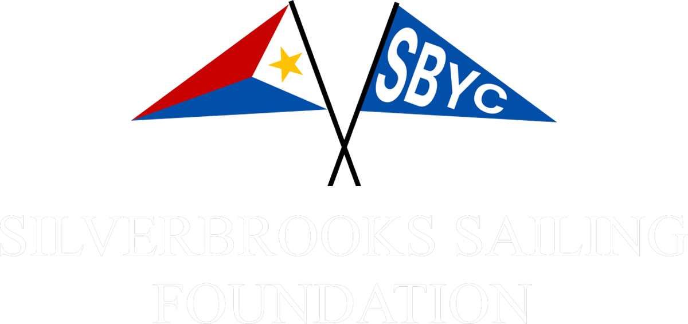

Give
Join the Burgee Society and keep two clubs on the water.
Ways to giveThe Burgee Society
Sends a beginner to two weeks of Free Sail lessons and first-sail gear.
A full summer of camp for one scholarship sailor.
A new Optimist or Larssen Fyra, with a plaque on the transom.
Underwrites a program for a season and an invitation to the Commodore's Dinner.
Ways to give
Unrestricted gifts go where the need is greatest each season.
Fund a new C420, ILCA or trainer and choose the name on its transom.
Endow a named scholarship that sends a sailor to camp every year, forever.
Leave a legacy through your will, a trust or a retirement account.
Donate gently used boats, sails, wetsuits and life jackets to either club.
Free Sail Saturdays, regatta race committee and the adaptive program all run on volunteers.

Mail a check to the Silverbrooks Sailing Foundation, 231 NE Belwether St, Silverbrooks, AB 19001, or email gifts@sbsf.org and the development team will be in touch.